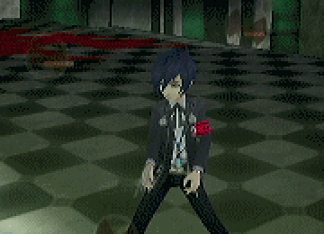

Persona 3 ,lançado fora do Japão como Shin Megami Tensei: Persona 3 , é um jogo eletrônico de RPG de 2006. É o quarto título principal da série Persona .
Originalmente lançado para PlayStation 2 no Japão em 2006 e na América do Norte em 2007, Persona 3 recebeu diversas versões aprimoradas e adaptações para outras plataformas: Persona 3 FES , uma versão estendida com um novo epílogo jogável e outras alterações, foi lançado para PlayStation 2 no Japão em 2007 e mundialmente em 2008. Uma versão para PlayStation Portable , Persona 3 Portable , foi lançada no Japão em 2009, na América do Norte em 2010 e na Europa em 2011, e adaptada para Nintendo Switch , PlayStation 4 , Windows , Xbox One e Xbox Series X/S em 2023. Persona 3 Reload , um remake do jogo principal e do epílogo, foi lançado em fevereiro de 2024 para Windows, PlayStation 4, PlayStation 5 , Xbox One e Xbox Series X/S, e Nintendo Switch 2 .

Em Persona 3 , o jogador assume o papel de um estudante do ensino médio que se junta ao "Esquadrão Especializado de Execução Extracurricular" (SEES), um grupo de estudantes que investiga uma anomalia temporal conhecida como "Hora Sombria", durante a qual seus membros podem entrar no Tártaro, uma torre que contém monstros chamados Sombras. Eles combatem as Sombras usando uma manifestação física de sua psique chamada Persona , que invocam disparando um objeto semelhante a uma arma chamado "Evocador" em sua cabeça.
Persona 3 incorpora elementos de jogos de RPG e simulação , à medida que o protagonista do jogo progride dia a dia ao longo de um ano letivo e forma relacionamentos que aprimoram o poder de suas Personas em batalha.
As Sombras (Shadows) em Persona 3 são manifestações físicas criadas a partir dos pensamentos e sentimentos negativos dos seres humanos
Tipos Principais de Sombras
. Sombras Comuns: Criaturas que habitam os andares do Tártaro (divididos em blocos como Thebel, Arqa, Yabbashah, Tziah, Harabah e Adamah). Elas possuem afinidades elementares (fogo, gelo, eletricidade, vento) e fraquezas que você deve explorar para derrubá-las (One More).
. Sombras dos Arcanos (Arcana Shadows): São 13 entidades poderosas ligadas aos Arcanos Maiores do Tarô e a fragmentos da Morte. Elas aparecem principalmente nas noites de Lua Cheia e agem como os chefes principais da história.

o jogo conta com 4 filmes lançados: Persona 3: The Movie #1 Spring of Birth, #2 Midsummer Knight's Dream, #3 Falling Down, #4 Winter of Rebirth
Persona 3: The Movie #1 Spring of BirthA empresa criadora do jogo (Atlus) depois do lançamendo do remake do jogo lançou uma playlist com as trilhas sonoras e musicas do jogo
Youtube music: Playlist Persona 3 Reload